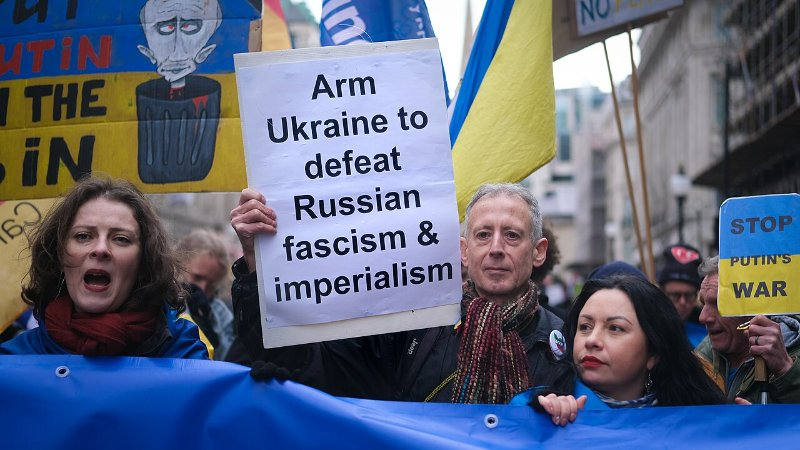

![NTK]()

Four Hours in Abu Dhabi, and Neither President in the Room
Russian and Ukrainian delegations met Tuesday for the first U.S.-mediated talks in nine months, and the session ran about four hours with a second day set for Wednesday (PBS). Neither Marco Rubio nor Volodymyr Zelenskyy attended. Jared Kushner and Steve Witkoff ran the table, and Kushner told delegates the U.S. had "narrowed the gaps" without saying which ones (AFP). Rubio, speaking from a G7 meeting in Paris, called the day "very productive," then added that nothing was "on the verge of being solved in the next 24 hours."
Zelenskyy's account was narrower. His team spent much of the day on prisoner exchanges, captive civilians and children taken from Ukraine, along with security guarantees (PBS). Those are the topics where deals tend to happen first, and also the topics that cost the Kremlin least.
The Agenda Moved Toward What Moscow Wanted Before the Invasion
The bigger story sat behind the prisoner swaps. U.S. officials said Washington now believes a Ukraine deal requires a simultaneous agreement with Russia on Europe's future security, including a revived body modeled on the NATO-Russia Council (Washington Post). Observers called that a risky nod to a Russian goal. Months before the 2022 invasion, Moscow demanded that NATO pull its infrastructure out of Eastern Europe, and Sergei Ryabkov, the diplomat who delivered that ultimatum, sat in the Russian delegation Tuesday (AFP).
Sergei Lavrov noticed what the Americans were offering. He praised the approach and contrasted it with the Biden administration, which he said refused to discuss collective security at all. Rubio supplied the condition that makes the praise understandable: any postwar guarantee for Ukraine has to be something Russia also accepts.
That puts the Kremlin in an unusual spot. It may get a veto over the arrangement meant to deter it.
Europe Got a Side Meeting
The Europeans were handled in sequence. Officials from Germany, France, Britain, Italy, NATO and the EU met the Americans and Ukrainians before the Russians arrived, and then stood down (Fox News). Moscow has refused to see them at the main table. German Foreign Minister Johan Wadephul said Europe "belongs at this table," and Rubio's answer was that it was not yet time (ABC News).
The split also runs through Europe. Ursula von der Leyen wants broader security talks only after a ceasefire, while Lavrov wants the framework first and the war second, and he rejected a truce as a way to buy Ukraine breathing room (ABC Australia). Meanwhile, Russian drones and a ballistic missile hit Ukraine overnight, 162 drones in all by Ukraine's count, and the power cuts came as temperatures fell (PBS).
Rubio asked for patience. Ukraine's grid is getting the other kind of attention.
Wednesday's session decides whether the Americans can turn a good first day into a calendar.
Wednesday Will Produce a Prisoner Swap and a Date for Round Two, Not a Ceasefire
The most likely outcome of the second day is a large exchange of prisoners and captive civilians, the item a senior Ukrainian official said the delegations already discussed, with details to be settled in the following days (PBS). Both sides can announce it without conceding territory, and Kushner and Witkoff need something to carry out of the room. The U.S. official who briefed reporters said as much: the goal in Abu Dhabi is a framework for more frequent talks, not a final agreement (Fox News). Expect that framework to arrive as an announced next meeting, probably with the envoys traveling to Moscow and Kyiv, a step another U.S. official said could follow if talks go well (Los Angeles Times). Donbas will stay untouched. Putin still insists Ukraine surrender the whole region and Zelenskyy has refused to hand over land his troops died defending (ABC Australia).
Who gains from a swap and a schedule? Trump, who needs a peace story before Democrats take Congress in January, and Putin, who gets to be seen negotiating while the grid attacks continue.
Moscow Will Take the European Security Framework and Decline the Europeans
That is the real trade, and it follows from the first. Russia wants the security architecture settled before the war is, and Lavrov has called that sequence "absolutely reasonable" (ABC Australia). Washington wants to bring Moscow into a broader process with European governments. The likeliest result over the coming week is Russia agreeing in principle to talk about a NATO-Russia Council-style body while keeping Europeans out of the Abu Dhabi format itself. That gives the Kremlin the forum it asked for before the invasion with no European voice on the one question that matters most to Europe.
The pressure lands on Brussels. Giorgia Meloni has already complained that the EU cannot field a single representative, and Zelenskyy said it is "time" for Europe to pick one (AFP). Expect a scramble to name an envoy within days, and expect it to expose the split between von der Leyen's ceasefire-first position and everyone who wants a seat now.
Trump's Territory Language Will Harden Into a Test for Zelenskyy
Trump said Ukraine would end up with "a little bit different shape" (Los Angeles Times). American officials say neither side will give up territory until it knows what security the postwar map comes with, so the guarantee and the border are being bargained together. Trump has not yet decided what the U.S. itself would guarantee, and the official called it a "really, really big deal."
That undecided guarantee is the lever. If Washington holds it back while pressing on territory, Zelenskyy faces a choice between ceding land and losing the one assurance that makes ceding it survivable. His battlefield gains give him some leverage, but a Ukrainian source says Kyiv wants at least 10 years of financial support for an 800,000-strong army. Whoever controls that promise controls the pace of everything else.
Three doors opened this week that were shut in February, and the first one leads to a room most people haven't looked into yet.
The Midterm Results Gave Ukraine Its First Leverage Over the Guarantee Itself
A U.S. official called an American security guarantee a "really, really big deal" that Trump and Zelenskyy would have to settle between them (Fox News). In February, that decision belonged to one man. Since then the midterms put Democrats in charge of Congress in January, and Democrats could demand more support for Ukraine (PBS). A guarantee that carries real weight needs congressional votes behind it. A promise Trump makes alone can be reversed by Trump alone.
That combination is new. Kyiv now has a second audience in Washington, and Europeans have a way to route their worries through it. Zelenskyy's ask is already specific: at least 10 years of financial support for an 800,000-strong army (AFP). Ten years of money cannot be appropriated by an envoy. It runs through the House and Senate budget process, and that is where the territory question gets tied to a vote Trump does not control.
A Ukraine Deal Written Into Law Would Be the Hardest Thing for Moscow to Quietly Hollow Out
Enter the second door, and it only exists if the first one opens. If Congress writes the guarantee into statute, the Russian veto Rubio described, a guarantee "Russia agrees to as well," stops being the only check on the arrangement (Washington Post). Moscow would face a commitment with a funding line and a vote count, not a handshake with an envoy. That is a harder thing to bargain away in a later round.
It also changes what Brussels can do. A statute gives European capitals something concrete to match: a shared funding formula for that 800,000-strong army, built before the NATO-Russia Council-style forum meets. Meloni's complaint was that Europe projects disarray (AFP). A joint funding package is the cheapest way to stop projecting it.
The Refusal to Seat Europe Gave Europe a Reason to Build the Envoy Post It Never Could Before
The third door is generative, and Moscow handed it over. Russia's insistence on a strictly trilateral format (Los Angeles Times) did what years of European meetings did not: it made a single EU voice look like a necessity instead of a turf fight. Zelenskyy said in Copenhagen it is "time" for Europe to pick a representative. Rubio said Europeans belong at the table eventually (ABC News).
Put those together and a named European negotiator has backing from Kyiv, a nod from Washington and a grievance from Rome. The usual obstacle was that no capital wanted to cede the job to another. Being locked out removes that argument for now. The open question is whether von der Leyen's ceasefire-first position or the sooner-the-better camp writes the envoy's mandate.
Two claims are doing the work of a peace plan, and both are made by people with something to sell.
"Both Sides Have Shown Flexibility" Is Being Offered as Evidence of a Deal, and Nobody Has Produced the Flexibility
A U.S. official, speaking on background, told reporters that Moscow and Kyiv "have shown a little bit of flexibility privately" on territory (Fox News). Kushner said the U.S. had "narrowed the gaps" and had "some good ideas" for bridging the rest (ABC Australia). Trump went further, telling an interviewer the two sides are "very close."
The claim answers a real need. A reader who has watched four and a half years of war wants to believe somebody has found the seam. A claim like this also costs nothing to make. The official is anonymous, the flexibility is private, and the gaps are unnamed. Nothing in it can be checked, so nothing in it can be wrong.
Now look at who profits from it spreading. Trump needs a peace story before Democrats take Congress. His envoys need a reason for the next trip to Moscow. And Moscow needs the word "flexibility" attached to Ukraine rather than to itself, because a Kyiv that appears ready to bend can be pressed to bend further.
The public record points the other way. Putin still demands all of Donbas, Zelenskyy still refuses to hand over land his troops died defending, and Russia's own negotiator declined to say anything about progress, calling it "too early" (Deutsche Welle). Nobody in a position to concede has been quoted, on the record, conceding anything. The Los Angeles Times noted what follows from that: Trump's earlier predictions about this war "have not come to pass" (Los Angeles Times).
The word has a history. After the 1938 Munich agreement, Neville Chamberlain announced "peace for our time," and the sentence stayed in the record long after the claim failed.
The tell is the verb. Flexibility "has been shown," in the passive, privately, to people the public cannot name. Compare that with the one concession anyone can actually count: the Kherson truce, which the First Lady brokered and which came with a name, a place and a date.
If the flexibility is real, it will surface as a signed exchange, a map or a date. Until one of those appears, the claim is an announcement about an announcement.